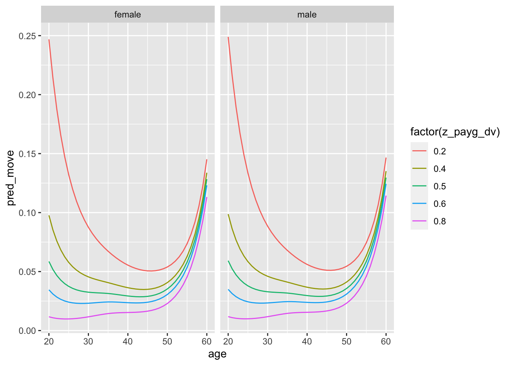
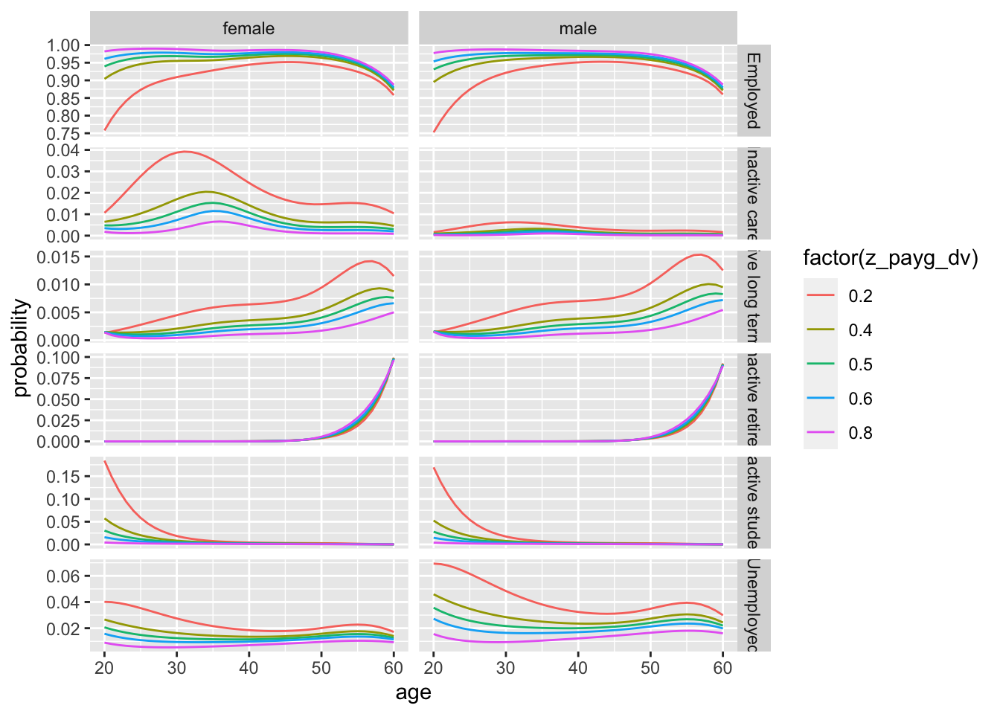
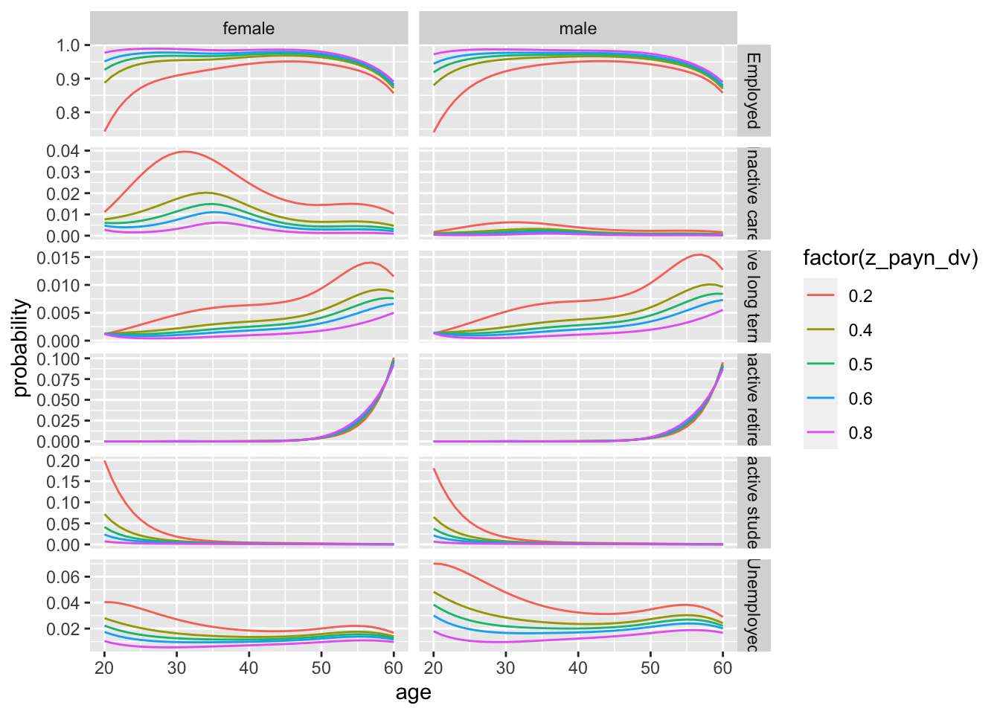

The aims of this notebook are to understand the effect of wages on remaining employed.
The variables to look at are:
employees_w12_paygl: gross pay at last payment
employees_w12_paynl: take home pay at last payment
seearngrs_dv: self-employment earnings - gross
seearnnet_dv: self-employment earnings - net
We are predominantly interested in the extent to which different levels of the above affect probability of those employed remaining employed at the next wave.
Preparation
Show R Code
library(tidyverse)library(nnet)devtools::load_all(here::here('R'))varnames <-c("jbstat", "dvage", "sex", "payg_dv", "payn_dv"# Gross and net monthly take-home pay )vartypes <-c("labels", "values", "labels", "values", "values" )df_ind <-get_ind_level_vars_for_selected_waves(varnames = varnames, vartypes = vartypes, waves = letters[1:11])# Clean the data df_ind_wages_standardised <- df_ind |># dvage uses negative values to indicate missing. The code below explicitly turns them all to missing valuesmutate(across(c(dvage, payn_dv, payg_dv), function(x) ifelse(x <0, NA, x))) |># This renames dvage to agerename(age = dvage) |>mutate(ifelse(sex %in%c("male", "female"), sex, NA) ) |>filter(between(age, 16, 64)) %>%filter(complete.cases(.)) |>group_by(wave)
We are not yet sure whether the derived wages variables includes second jobs.
Let’s now look at the range of take-home pay by wave for those employed
# A tibble: 11 × 4
wave lower_q median_q upper_q
<chr> <dbl> <dbl> <dbl>
1 a 882. 1508 2481.
2 b 917. 1583 2500
3 c 932 1600 2500
4 d 953. 1625 2583.
5 e 990 1667. 2607
6 f 1000 1700 2667.
7 g 1018. 1733. 2708.
8 h 1080 1772. 2800
9 i 1090. 1800 2833.
10 j 1167. 1900 2968
11 k 1233. 2000 3035.
Because the median and distribution of wages changed with each wave, in order to make use of all waves worth of data as predictors of remaining employment, we should probably look at the effect of wage-specific quantiles on remaining employed
Now let’s start with the simplest model, just predicting whether next_wave is still employed
Show R Code
mod_00 <-glm(not_employed ~ z_payg_dv, family =binomial(link ='logit'), data = df_ind_wages_normalised)
Show R Code
summary(mod_00)
Call:
glm(formula = not_employed ~ z_payg_dv, family = binomial(link = "logit"),
data = df_ind_wages_normalised)
Deviance Residuals:
Min 1Q Median 3Q Max
-0.7429 -0.4677 -0.3053 -0.2005 2.9981
Coefficients:
Estimate Std. Error z value Pr(>|z|)
(Intercept) -1.14626 0.01511 -75.87 <2e-16 ***
z_payg_dv -3.33670 0.03963 -84.19 <2e-16 ***
---
Signif. codes: 0 '***' 0.001 '**' 0.01 '*' 0.05 '.' 0.1 ' ' 1
(Dispersion parameter for binomial family taken to be 1)
Null deviance: 90359 on 163615 degrees of freedom
Residual deviance: 81514 on 163614 degrees of freedom
AIC: 81518
Number of Fisher Scoring iterations: 6
The more relative pay people in employment get, the lower the probability of moving from employment becomes, and this term is statistically significant.
What does this mean substantively?
Show R Code
predict(mod_00, type ="response", newdata =data.frame(z_payg_dv =c(0.2, 0.4, 0.5, 0.6, 0.8)))
For someone earning less than 80% of earners, the probability of no longer being employed in the next wave is 14%. For someone earning more than 80% of earners, the probability of no longer being employed in the next wave is 2%. For someone earning the median amount, the probability of not being employed in the next wave is 5.6%.
Now let’s add the standard controls
Show R Code
mod_01 <-glm(not_employed ~ sex + splines::bs(age, 5) + z_payg_dv, family =binomial(link ='logit'), data = df_ind_wages_normalised)
Show R Code
summary(mod_01)
Call:
glm(formula = not_employed ~ sex + splines::bs(age, 5) + z_payg_dv,
family = binomial(link = "logit"), data = df_ind_wages_normalised)
Deviance Residuals:
Min 1Q Median 3Q Max
-1.5968 -0.3699 -0.2712 -0.1980 3.0013
Coefficients:
Estimate Std. Error z value Pr(>|z|)
(Intercept) 0.92840 0.04069 22.815 <2e-16 ***
sexmale 0.01957 0.02161 0.906 0.365
splines::bs(age, 5)1 -3.06056 0.09541 -32.078 <2e-16 ***
splines::bs(age, 5)2 -3.19548 0.07231 -44.194 <2e-16 ***
splines::bs(age, 5)3 -3.72907 0.09070 -41.115 <2e-16 ***
splines::bs(age, 5)4 -2.47387 0.07098 -34.854 <2e-16 ***
splines::bs(age, 5)5 -1.07421 0.06181 -17.378 <2e-16 ***
z_payg_dv -1.98243 0.04503 -44.027 <2e-16 ***
---
Signif. codes: 0 '***' 0.001 '**' 0.01 '*' 0.05 '.' 0.1 ' ' 1
(Dispersion parameter for binomial family taken to be 1)
Null deviance: 90359 on 163615 degrees of freedom
Residual deviance: 73228 on 163608 degrees of freedom
AIC: 73244
Number of Fisher Scoring iterations: 6
Once age is controlled for in the standard way, the effect of sex becomes non-significant.
The model with interactions between age and relative wage is preferred over the next most complex model. As before, let’s look at what the model predicts
pred_df |>ggplot(aes(x = age, y = pred_move, group =factor(z_payg_dv), color =factor(z_payg_dv) )) +geom_line() +facet_wrap(~sex)

Comparatively wages have a very strong influence on probability of remaining employed at younger adult ages. These influences diminish with age. From the early to mid 50s the probability of leaving employment increases regardless of comparative wages.
There are a couple more modifications to consider:
Include an interaction between sex and comparative wages (for example, are women more likely to exit employment if they receive low wages than men, or vice versa?)
Move to multinomial logistic regression, to model where people move if they move from employment
Let’s start with the sex interaction term
Show R Code
mod_03 <-glm(not_employed ~ sex + sex:z_payg_dv + splines::bs(age, 5) * z_payg_dv, family =binomial(link ='logit'), data = df_ind_wages_normalised)AIC(mod_00, mod_01, mod_02, mod_03)
The model with a sex:wage interaction is not preferred to the model without such terms.
Now let’s run the multinomial logit model:
Show R Code
mod_multi_00 <- nnet::multinom( next_status ~ sex + splines::bs(age, 5) * z_payg_dv, data = df_ind_wages_normalised )
# weights: 98 (78 variable)
initial value 318382.034948
iter 10 value 60337.114215
iter 20 value 53099.169011
iter 30 value 49280.455396
iter 40 value 48155.231702
iter 50 value 47801.646126
iter 60 value 47358.005159
iter 70 value 47306.211706
iter 80 value 47260.578908
iter 90 value 47073.166846
iter 100 value 47035.764377
final value 47035.764377
stopped after 100 iterations
Now to visualise it, focusing on Unemployment, Inactive care, Inactive long term sick, Inactive student, and Inactive retired
Show R Code
pred_preds_df |>filter( state %in%c("Employed", "Inactive care", "Inactive student", "Inactive long term sick", "Unemployed", "Inactive retired") ) |>ggplot(aes(x = age, y = probability, colour =factor(z_payg_dv), group = z_payg_dv)) +geom_line() +facet_grid(state ~ sex, scales ="free_y")

Let’s look at the equivalent for net
Show R Code
mod_multi_00_net <- nnet::multinom( next_status ~ sex + splines::bs(age, 5) * z_payn_dv, data = df_ind_wages_normalised )
# weights: 98 (78 variable)
initial value 318382.034948
iter 10 value 60451.180405
iter 20 value 53017.520478
iter 30 value 49595.894512
iter 40 value 48231.978397
iter 50 value 47910.906606
iter 60 value 47429.744570
iter 70 value 47397.698092
iter 80 value 47350.414975
iter 90 value 47174.938954
iter 100 value 47120.210532
final value 47120.210532
stopped after 100 iterations
pred_preds_df_net |>filter( state %in%c("Employed", "Inactive care", "Inactive student", "Inactive long term sick", "Unemployed", "Inactive retired") ) |>ggplot(aes(x = age, y = probability, colour =factor(z_payn_dv), group = z_payn_dv)) +geom_line() +facet_grid(state ~ sex, scales ="free_y")

I don’t think there’s any substantive difference whether using gross or net pay. For consistency I’m going to keep using gross pay for the counterfactual
Counterfactual Simulation
Let’s model the following counterfactual:
If someone is earning at at least the 40th percentile, their pay stays as is;
If someone is earning below the 40th percentile, their pay is moved up to the 40th percentile
Show R Code
df_ind_baseline <- df_ind_wages_normalised |>ungroup() |>filter(wave =='j')df_ind_counterfactual <- df_ind_baseline |>mutate(z_payg_dv =ifelse(z_payg_dv <0.4, 0.4, z_payg_dv) )preds_baseline <-predict(mod_multi_00, newdata = df_ind_baseline, type ="probs")preds_counterfactual <-predict(mod_multi_00, newdata = df_ind_counterfactual, type ="probs")predictions_summary_matrix <-cbind(# The number 2 indicates do the sum function for each column.# If it were 1 then this would sum for each row (which should add up to 1 in call cases)apply(preds_baseline, 2, sum),apply(preds_counterfactual, 2, sum))colnames(predictions_summary_matrix) <-c("base", "counterfactual")predictions_summary_matrix
base counterfactual
Employed 10882.48087 11230.64693
Inactive care 89.46711 52.04180
Inactive long term sick 49.18924 38.07907
Inactive other 26.78770 22.78726
Inactive retired 229.76486 227.66949
Inactive student 352.69113 95.13879
Unemployed 234.61909 198.63665
base counterfactual
Employed 100 103.19933
Inactive care 100 58.16864
Inactive long term sick 100 77.41343
Inactive other 100 85.06615
Inactive retired 100 99.08804
Inactive student 100 26.97510
Unemployed 100 84.66346
In this scenario, the proportion of those employed who remain employed is expected to increase by around 3%, the proportion transitioning from employment to full-time care to fall by around 40%, from employment to long-term sick to fall by around 22%, and to unemployment by around 15%. Many of these transitions from employment are quite unusual; instead such transitions may occur over multiple waves, often via unemployment through an intermediate state. The following table shows the proportion of the population projected to move into each state in both the baseline and counterfactual scenario:
Show R Code
prop_in_scenario <-apply( predictions_summary_matrix, 2, function(x) (100* x /sum(x)) ) prop_in_scenario
base counterfactual
Employed 91.7191814 94.6535772
Inactive care 0.7540422 0.4386161
Inactive long term sick 0.4145743 0.3209361
Inactive other 0.2257707 0.1920545
Inactive retired 1.9364927 1.9188326
Inactive student 2.9725337 0.8018440
Unemployed 1.9774049 1.6741395
So, in the baseline scenario around 92% of those employed in wave T are predicted to remain employed at wave T+1, around 3% to become a student at wave T+1, around 2% to become retired, or to become unemployed. In the counterfactual scenario the proportion remaining employed is projected to increase retention of employment by 2.9%.
Notes from Martin
The function ecdf converts the real wages into a value between 0 and 1, where e.g. 0.2 is 20% up the wages distribution, with 80% of waged employees earning more than them.
This allows us to compare relative position across all the waves without adjusting wages
Model 1 - probability of moving from employment to other categories, based on age sex and wage position
We included an interaction between wages and age
But we don’t think at the broadest level sex makes a difference
This is all standard logistic regression
We don’t think we can use the Minimum Income Standard because this operates at a household income
Could a wage based intervention increase inequalities?
By having people who moved into education remaining in better paid work?